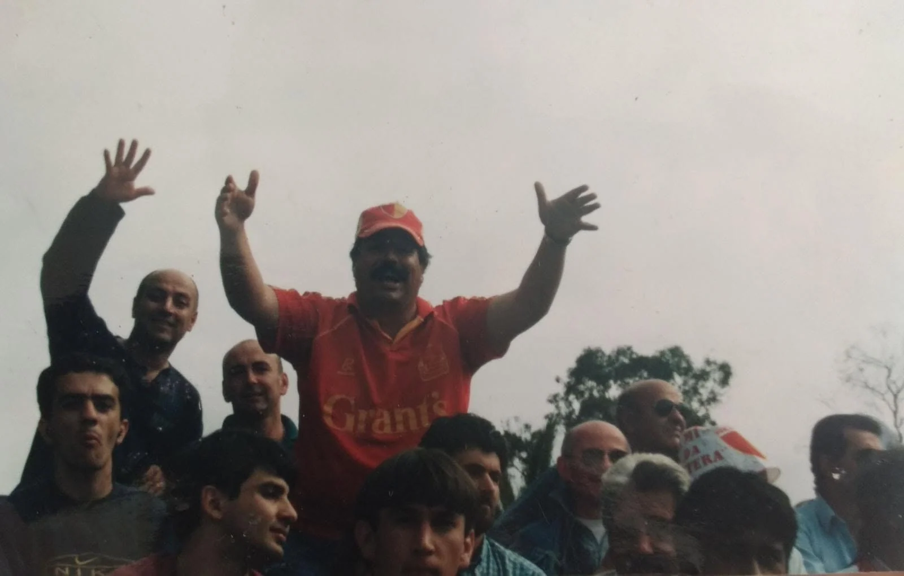

{{ hito.titulo | escape }}
{{ hito.descripcion | escape }}
{{ site.data.textos_paginas.historia.descripcion | escape }}
{{ site.data.historia_texto.subtitulo | escape }}
Fechas que cuentan
{{ site.data.textos_paginas.historia.cronologia_descripcion | escape }}
{{ hito.descripcion | escape }}
Nuestra gente
Las personas de Frontera y del barrio merecen tener su lugar.

Hinchas, vecinos, dirigentes y personas que construyeron una comunidad.
Conocé los homenajes ↗